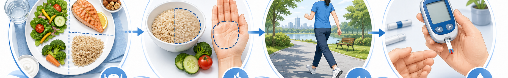

한눈에 보는 혈당 목표 (Glycemic Targets)
당화혈색소 (HbA1c)
<7.0
% (대다수 성인 목표)
공복혈당 (FPG)
80~130
mg/dL (식전)
식후 2시간 혈당
<180
mg/dL (PPG)
탄수화물 1회분
45~60
g / 끼 (밥 ⅔공기 수준)
당뇨 접시법 (Diabetes Plate Method · ADA)
½ 접시 · 채소
잎채소·브로콜리·오이·가지·버섯 등 비전분 채소로 절반을 채웁니다. 식이섬유가 혈당 상승을 완만하게 합니다.
¼ 접시 · 단백질
생선·닭가슴살·두부·계란·콩류 등 저지방 단백질로 ¼을 채웁니다. 가공육·튀김은 피합니다.
¼ 접시 · 탄수화물
현미·잡곡밥·고구마·통곡빵 등 복합 탄수화물로 ¼만 채웁니다. 흰쌀·흰빵은 줄입니다.
먹는 순서도 중요 — 채소 → 단백질 → 탄수화물 순서로 먹으면 식후 혈당 피크가 더 낮습니다.
식품 선택 가이드 (Do & Don't)
권장 식품 · DO
- 1. 잡곡밥·현미밥 — 흰쌀밥보다 GI 20~30 낮음
- 2. 비전분 채소 매끼 ½접시 — 식이섬유 풍부
- 3. 생선·두부·콩류 단백질 — 포화지방 적음
- 4. 견과류 1줌 (30g/일) — 호두·아몬드, 무염
- 5. 물 하루 1.5~2L — 음료 대신 물·녹차
- 6. 식초·레몬·계피로 맛내기 — 혈당 완화
- 7. 천천히 20분 이상 꼭꼭 씹어 먹기
주의 식품 · DON'T
- 1. 흰쌀밥·흰빵 과다 — GI 70+, 혈당 급상승
- 2. 단 음료 (주스·탄산·꿀물) — 즉각 혈당 ↑
- 3. 떡·죽·국수 단독 — 단순당, GI 높음
- 4. 야식·심야 간식 — 야간 혈당·체중 증가
- 5. 튀김·가공육 — 인슐린 저항성 ↑
- 6. 시럽·꿀·과당 시럽 — "건강해 보여도" 같음
- 7. 빈속 과일·말린 과일 과다 — 과당 농축
인슐린·SU 복용 중인 분 · IMPORTANT
인슐린·설포닐우레아(아마릴·다오닐 등) 복용 중에 식사를 거르거나 탄수화물을 갑자기 크게 줄이면 저혈암(혈당 <70mg/dL) — 식은땀·떨림·어지러움이 생길 수 있습니다. 사탕 3~4개 또는 주스 100ml로 즉시 회복시키고, 반복되면 외래로 연락 주세요. 식이 변경 전 약 용량 점검이 필요합니다. (☏ 031-893-4560)